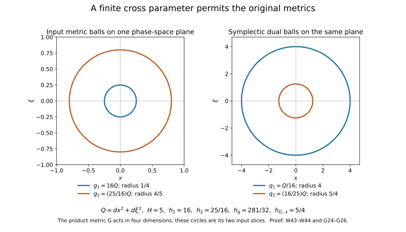

Two measuring scales, one Weyl product
Two symbols can have different derivative scales. Their Weyl product couples those scales through the symplectic form. The useful parameter measures the coupling; it need not control either scale separately. We identify the exact compatibility conditions, derive the quantization formula, and prove product and remainder estimates.
Localizing symbols with moving metrics supplies symbol spaces, partitions and bounded compactly supported approximation. Quadratic Fourier multipliers at a moving scale supplies the Fourier estimates with convention \(D=-i\partial\). We also use finite-dimensional linear algebra; completeness, compact smooth approximation and integration in \(L^2\); and the tempered Schwartz kernel theorem: every continuous linear map \(\mathcal S(V)\to\mathcal S'(V)\) has a unique kernel in \(\mathcal S'(V\times V)\). The kernel theorem is used only for the converse description of all Schwartz-to-distribution operators. Sections 4.1–4.5 below prove that theorem with the original Schwartz seminorms and continuity into the strong dual. The operators and kernel identities needed for the product are constructed directly. Basic references are [Hörmander 1979], [Hörmander III] and [Lerner, Metrics in phase space].
Throughout, \(V\) is a real vector space of dimension \(n\geq1\), \(W=V\oplus V^*\), and
\[ \sigma((x,\xi),(y,\eta))=\langle\xi,y\rangle-\langle x,\eta\rangle. \tag{W1} \]Measures on \(V\) and \(V^*\) are dual for Fourier inversion with coefficient \((2\pi)^{-n}\). Multiplying one measure by a positive constant divides the other by that constant; the phase-space measure and all quantizations below are unchanged.
1. Quadratic forms and the cross parameter
For a positive-definite quadratic form \(q\) on \(W\), define
\[ q^\sigma(T)=\sup_{S\ne0}\frac{|\sigma(T,S)|^2}{q(S)}. \tag{W2} \]This is positive definite. Ordinary quadratic duality, composed with the invertible linear map induced by \(\sigma\), gives
\[ (q^\sigma)^\sigma=q,\qquad (c q)^\sigma=c^{-1}q^\sigma, \qquad q\leq C r\ \Longleftrightarrow\ r^\sigma\leq Cq^\sigma. \tag{W3} \]For example, write \(q(T)=T^tQT\) in coordinates and let \(J\) represent \(\sigma\). Then \(q^\sigma(T)=T^tJQ^{-1}J^tT\); substitution proves the first identity, and inversion of positive matrices proves the order reversal. Alternatively, all three follow by mapping the unit ellipsoid to its polar ellipsoid and using that taking the polar twice returns the original ellipsoid.
We will need an exact formula for the dual of a sum. If \(F_1,F_2\) are positive quadratic forms on a finite-dimensional space and primes denote ordinary dual forms, then
\[ (F_1+F_2)'(\zeta) =\min_{\zeta_1+\zeta_2=\zeta} \big(F_1'(\zeta_1)+F_2'(\zeta_2)\big). \tag{W4} \]To prove it, represent the forms by positive matrices \(A_1,A_2\). Put \(v=(A_1+A_2)^{-1}\zeta\) and \(\zeta_j=A_jv\). Every other decomposition is \((\zeta_1+e,\zeta_2-e)\). Expanding its objective gives the value \(v^t(A_1+A_2)v\), plus \(e^t(A_1^{-1}+A_2^{-1})e\); the mixed terms cancel. The latter quantity is nonnegative and vanishes only at \(e=0\). This proves both the minimum and its value. In particular, if \(g=(g_1+g_2)/2\),
\[ g^\sigma(T)=2\min_{T_1+T_2=T} \big(g_1^\sigma(T_1)+g_2^\sigma(T_2)\big). \tag{W5} \]The factor two comes from the factor one half in the mean; it is not optional.
At one point of phase space, set
\[ h_j^2=\sup_{T\ne0}\frac{g_j(T)}{g_j^\sigma(T)},\qquad H^2=\sup_{T\ne0}\frac{g_1(T)}{g_2^\sigma(T)} =\sup_{T\ne0}\frac{g_2(T)}{g_1^\sigma(T)}. \tag{W6} \]The two expressions for \(H\) are equal by (W3): each is the least constant in one of the equivalent inequalities \(g_1\leq H^2g_2^\sigma\), \(g_2\leq H^2g_1^\sigma\). These are also equivalent to
\[ |\sigma(T,S)|^2\leq H^2g_1^\sigma(T)g_2^\sigma(S). \tag{W7} \]Indeed, divide by \(g_2^\sigma(S)\), take the supremum over \(S\), and use (W3).
For the mean metric, write \(h_g^2=\sup g/g^\sigma\). Then
\[ \max(h_1^2,h_2^2,H^2)\leq4h_g^2 \leq h_1^2+h_2^2+2H^2. \tag{W8} \]For the first inequality, \(g_j\leq2g\) and \(g^\sigma\leq2g_k^\sigma\) show that \(g_j(T)/g_k^\sigma(T)\leq4g(T)/g^\sigma(T)\), for both choices of \(j,k\). For the second, \(2g=g_j+g_k\leq(h_j^2+H^2)g_j^\sigma\). Dualizing gives \(2g_j\leq(h_j^2+H^2)g^\sigma\). Add the two inequalities. No uncertainty inequality has been assumed in this argument.
2. Transport between compatible metrics
Let \(g_1,g_2\) be slowly varying metrics on \(W\), in the sense of Localizing symbols with moving metrics. Write \(q_j(X)=g_{j,X}^\sigma\). Each metric is assumed symplectically temperate, meaning that for fixed constants \(C,N\), uniformly in \(X,Y,T\),
\[ q_j(X)(T)\leq Cq_j(Y)(T) \big(1+q_j(Y)(X-Y)\big)^N. \tag{W9} \]By (W3), this is equivalent to the primal inequality \(g_{j,Y}\leq Cg_{j,X}(1+q_j(Y)(X-Y))^N\). Constants can be enlarged so that a common \(C\geq1\), \(N\geq0\) works for both metrics. The bases of the quadratic distances matter.
The cross tests are
\[ \begin{split} q_1(X)(T)&\leq Cq_1(Y)(T) \big(1+q_2(X)(Y-X)\big)^N,\\ q_2(X)(T)&\leq Cq_2(Y)(T) \big(1+q_1(X)(Y-X)\big)^N. \end{split} \tag{W10} \]We call the pair compatible when these hold. They require more than temperateness of each metric separately.
Lemma 2.1 (metric transport). Under (W9)–(W10), there are common constants \(C,L\) such that, for all \(j,k\in\{1,2\}\),
\[ q_j(X)\leq Cq_j(Y)\big(1+q_k(Y)(X-Y)\big)^L, \quad g_{j,Y}\leq Cg_{j,X}\big(1+q_k(Y)(X-Y)\big)^L. \tag{W11} \]Moreover, with \(g=(g_1+g_2)/2\), there are \(C',L'\) such that
\[ g_{j,Y}\leq C'g_{j,X} \big(1+g_Y^\sigma(X-Y)\big)^{L'},\qquad j=1,2. \tag{W12} \]Consequently \(g\) is symplectically temperate.
Proof. For \(j=k\), the first estimate in (W11) is (W9). For \(j\ne k\), (W9) gives
\[ 1+q_k(X)(X-Y)\leq C_0\big(1+q_k(Y)(X-Y)\big)^{N+1}. \]Insert this into (W10). Dualizing gives the second estimate in (W11).
Fix \(X,Y\), choose any intermediate point \(Z\), and put
\[ R=1+q_1(Y)(X-Z)+q_2(Y)(Z-Y). \]Use (W11) first on the segment from \(Z\) to \(Y\), with \(k=2\). It gives
\[ g_{j,Y}\leq Cg_{j,Z}R^L, \qquad q_1(Z)(X-Z)\leq Cq_1(Y)(X-Z)R^L\leq CR^{L+1}. \]Use (W11) again on the segment from \(X\) to \(Z\), now with \(k=1\). Thus
\[ g_{j,Z}\leq Cg_{j,X}(1+q_1(Z)(X-Z))^L \leq C_1g_{j,X}R^{L(L+1)}. \]Multiplication gives an exponent \(L^2+2L\). Minimize \(R\) using (W5); its minimum is \(1+g_Y^\sigma(X-Y)/2\). This proves (W12). Adding the two primal inequalities proves temperateness of the mean. It is also slowly varying: if \(g_X(Y-X)\) is sufficiently small, then \(g_{j,X}(Y-X)\leq2g_X(Y-X)\) is small for both metrics, and their slow-variation comparisons can be added. ∎
A positive weight \(m\) is symplectically temperate for \(g\) if it is \(g\)-continuous locally and
\[ m(Y)\leq Cm(X)\big(1+g_Y^\sigma(X-Y)\big)^N. \tag{W13} \]Its reciprocal has the same property, with possibly larger exponent. In fact, apply (W13) with \(X,Y\) exchanged and use (W9) to replace the resulting distance based at \(X\) by a power of the distance based at \(Y\). Local comparability also reverses. Products and positive real powers are handled in the same way.
Suppose \(m_j\) is initially temperate for its own \(g_j\). The additional weight tests are
\[ m_1(Y)\leq Cm_1(X)(1+q_2(X)(X-Y))^N, \quad m_2(Y)\leq Cm_2(X)(1+q_1(X)(X-Y))^N. \tag{W14} \]For a compatible pair, these are equivalent to both weights being temperate for the mean \(g\). Here is the full reduction. Own temperateness and (W14), with the distance-base conversion used above, give \(m_j(Y)\leq Cm_j(X)(1+q_k(Y)(X-Y))^L\) for either \(k\). Repeat the two-segment proof of (W12), replacing its primal metric factor by \(m_j\); the estimate for \(q_1(Z)\) is unchanged. Minimization proves (W13) for the mean. Local \(g\)-continuity follows from \(g_j\)-continuity and \(g_j\leq2g\).
Conversely, \(g_Y^\sigma\leq2q_k(Y)\), followed by the distance-base conversion for \(g_k\), turns mean temperateness into (W14). If only mean temperateness and \(g_j\)-continuity were given at the outset, the same inequality with \(k=j\) also proves own temperateness. This explains the exact weight hypotheses used later.
3. What the diagonal test requires
On \(W\times W\), use the product metric and weight
\[ G_{(Y,Z)}(T,S)=g_{1,Y}(T)+g_{2,Z}(S),\qquad M(Y,Z)=m_1(Y)m_2(Z). \tag{W15} \]The product metric is slowly varying and the product weight is locally \(G\)-continuous, directly from the separate local comparisons.
Use dual coordinates \((p,q;r,s)\) and the auxiliary quadratic phase \(A_0(p,q;r,s)=2(q\cdot r-p\cdot s)\). Its symmetric map in the convention of Quadratic Fourier multipliers at a moving scale sends \((p,q;r,s)\) to \((-s,r;q,-p)\). Substitution in that lesson's definition of the phase-dual form gives
\[ G_{(Y,Z)}^{A_0}(T,S)=q_2(Z)(T)+q_1(Y)(S). \tag{W16} \]Consequently \(G_{(X,X)}\leq H(X)^2G_{(X,X)}^{A_0}\), and \(H(X)^2\) is the least possible constant. Notice the interchange of the two metrics in (W16).
Theorem 3.1 (diagonal criterion). The product metric is uniformly \(A_0\)-temperate at the points \((X,X)\) if and only if (W10) holds. If the individual weights are temperate for their own metrics, the product weight is uniformly \(A_0,G\)-temperate there if and only if (W14) holds.
Proof of necessity. In dual form, metric temperateness on the diagonal says
\[ q_1(X)(T)+q_2(X)(S) \leq C\big(q_1(Y)(T)+q_2(Z)(S)\big)\mathcal D^L, \quad \mathcal D=1+q_2(Z)(X-Y)+q_1(Y)(X-Z). \tag{W17} \]Set \(Z=X,S=0\) to obtain the first cross test. Set \(Y=X,T=0\) for the second. The analogous product-weight inequality is \(m_1(Y)m_2(Z)\leq Cm_1(X)m_2(X)\mathcal D^L\). The same substitutions and cancellation of a positive factor give (W14).
Proof of sufficiency. We supply the distance comparison that is needed for this implication. For any single temperate metric \(g\), write \(q(U)=g_U^\sigma\), and let
\[ \mathcal E=1+q(Y)(X-Z)+q(Z)(X-Y),\qquad P=Y+Z-X. \]Because \(P-Z=Y-X\) and \(P-Y=Z-X\), temperateness gives
\[ q(P)(X-Y)\leq C\mathcal E^{L+1},\qquad q(P)(X-Z)\leq C\mathcal E^{L+1}. \]For example, the first is the comparison of \(q(P)\) with \(q(Z)\), whose controlling distance \(P-Z\) is exactly \(-(X-Y)\). Compare \(q(Y)\) with \(q(P)\); the controlling distance \(Y-P=X-Z\) is bounded by the second estimate. Do the analogous comparison for \(q(Z)\). We obtain
\[ q(Y)(X-Y)+q(Z)(X-Z)\leq C'\mathcal E^{(L+1)^2}. \tag{W18} \]Now take the mean metric from Section 2. Its dual is at most twice each \(q_j\), so \(\mathcal E\leq2\mathcal D\). Apply (W12) to \(g_{1,Y}/g_{1,X}\) and \(g_{2,Z}/g_{2,X}\), and then (W18). This yields
\[ g_{1,Y}(T)+g_{2,Z}(S) \leq C''\big(g_{1,X}(T)+g_{2,X}(S)\big)\mathcal D^{L''}. \]It is precisely the primal phase-temperateness condition from Section 5 of Quadratic Fourier multipliers at a moving scale. Dualization gives (W17). The weights are temperate for the mean by the preceding weight equivalence, so applying (W13) and (W18) also proves the product-weight condition. ∎
Taking \(g_1=g_2=g\) makes the cross tests consequences of ordinary symplectic temperateness and its distance-base conversion. Thus one temperate metric and any two temperate weights always satisfy the diagonal conditions, with parameter \(H=h_g\). This includes metrics and weights with no initial ordinary continuity.
4. Kernels and the Weyl normalization
For \(a\in\mathcal S(W)\) and \(\tau\in\mathbb R\), define
\[ \operatorname{Op}_\tau(a)u(x) =(2\pi)^{-n}\iint e^{i\langle x-y,\xi\rangle} a((1-\tau)x+\tau y,\xi)u(y)\,dy\,d\xi. \tag{W19} \]The choices \(\tau=0,1,1/2\) are left, right and Weyl quantization. We write \(a^w=\operatorname{Op}_{1/2}(a)\).
These definitions extend to every tempered distribution \(a\). For example, put
\[ K_a(z+t/2,z-t/2) =(2\pi)^{-n}\int e^{i\langle t,\xi\rangle}a(z,\xi)\,d\xi, \qquad a(z,\xi)=\int e^{-i\langle t,\xi\rangle} K_a(z+t/2,z-t/2)\,dt. \tag{W20} \]Both equalities are identities of tempered distributions: partial Fourier transformation and the invertible linear coordinate map \((z,t)\mapsto(z+t/2,z-t/2)\) are continuous isomorphisms of Schwartz space and its dual. The absolute determinant of this coordinate map is one.
For \(u,v\in\mathcal S(V)\), define \(\langle a^wu,v\rangle\) by applying \(K_a\) to \(u(y)\overline{v(x)}\). This is a continuous map \(\mathcal S\to\mathcal S'\). Indeed, each Schwartz seminorm of the test tensor is bounded by a product of finitely many seminorms of \(u,v\); a tempered distribution is bounded by a finite sum of such seminorms. The same construction works for every \(\tau\). It also gives the usual weak integral interpretation of (W19). The kernel theorem contract supplies the converse: all continuous maps \(\mathcal S\to\mathcal S'\) are obtained uniquely in this way.
For a finite polynomial in frequency, \(a(x,\xi)=\sum_\alpha a_\alpha(x)\xi^\alpha\), left and right quantization put the coefficients on the corresponding sides:
\[ \operatorname{Op}_0(a)u=\sum_\alpha a_\alpha D^\alpha u, \qquad \operatorname{Op}_1(a)u=\sum_\alpha D^\alpha(a_\alpha u). \]This remains valid for coefficients \(a_\alpha\in\mathcal S'(V)\) and \(u\in\mathcal S(V)\). Indeed, the inverse Fourier transform of \(\xi^\alpha\) is \(D_t^\alpha\delta(t)\). In the left kernel the coefficient is evaluated at \(x\), so pairing this delta derivative against the input differentiates \(u\); in the right kernel it is evaluated at \(y\), so the output derivative acts on the entire product \(a_\alpha u\). These kernels are defined by tensor products followed by invertible linear coordinate changes, and multiplication of a tempered coefficient by the smooth Schwartz input is well defined. No product of two arbitrary distributions is used.
Taking the complex conjugate and exchanging \(x,y\) in (W20) proves
\[ (a^w)^*=(\overline a)^w. \tag{W21} \]Here the adjoint is the distributional sesquilinear adjoint on Schwartz functions. A real symbol therefore gives a symmetric Schwartz-domain operator whenever it has values in \(L^2\). Equation (W21) alone makes no assertion of selfadjoint closure for a general real symbol.
4.1. Completeness with the original Schwartz seminorms
We prove the kernel theorem used above, including continuity into the strong dual. The argument also permits different finite input and output dimensions. Work first on \(\mathbb R^p\) and \(\mathbb R^q\), with original positive constant densities \(d\mu_x=c_x\,dx\), \(d\mu_y=c_y\,dy\). The constants \(c_x,c_y>0\) remain in every coefficient integral. Choosing a basis in the original \(V\) gives the case \(p=q=n\) with its actual density, not a replacement measure. The distributions are complex-linear; use the bilinear pairing \(B(f,g)=(Af)(g)\). In the sesquilinear notation above the same value is \(\langle Af,v\rangle=B(f,\overline v)\).
Retain every monomial seminorm
\[ p_{\alpha,\beta}(f)=\sup_x|x^\alpha\partial^\beta f(x)|, \qquad P_N(f)=\max_{|\alpha|\leq N,\ |\beta|\leq N}p_{\alpha,\beta}(f), \quad N=0,1,2,\ldots . \tag{WK1} \]The finite maxima \(P_N\) express the same topology because each original seminorm occurs in some maximum, and every maximum involves only finitely many original seminorms. The metric and topological arguments in Section 14.1 of Banach estimates, quotient spaces and compact parameter arguments apply to this countable separating family.
Here is completeness itself. If \(f_j\) is Cauchy for every original seminorm, then \(\partial^\beta f_j\) converges uniformly on all of \(\mathbb R^p\) to a continuous function \(g_\beta\). Scalar completeness and the uniform Cauchy estimate give that limit. The fundamental theorem on a coordinate segment gives
\[ \partial^\beta f_j(x+te_i)-\partial^\beta f_j(x) =\int_0^t\partial^{\beta+e_i}f_j(x+se_i)\,ds. \tag{WK2} \]Uniform convergence passes this identity to \(g_\beta,g_{\beta+e_i}\). Differentiating the integral proves that \(g_0\) is smooth with derivatives \(g_\beta\), by induction on the full multi-index. For each \(\alpha,\beta\), the weighted functions \(x^\alpha\partial^\beta f_j\) are also uniformly Cauchy. Their pointwise limit is \(x^\alpha g_\beta\), so they converge uniformly to it. That limit is bounded, and \(f_j\to g_0\) in that original seminorm. Thus \(g_0\in\mathcal S\) and the space is Fréchet. The proof includes all polynomial weights, not only smooth convergence on compact sets. It applies in dimension \(p+q\) as well.
We will estimate some sums with auxiliary polynomial weights, while keeping their comparison with (WK1) explicit. For an integer \(S\geq0\), the complete multinomial identity yields
\[ (1+|x|)^S\leq(1+\textstyle\sum_i|x_i|)^S =\sum_{h+|\alpha|=S}\frac{S!}{h!\alpha!}|x^\alpha|. \tag{WK3} \]Consequently a supremum weighted by \((1+|x|)^S\) and involving derivatives through order \(R\) is bounded by the entire finite sum of the corresponding original \(p_{\alpha,\beta}\), with coefficients in (WK3). Conversely \(p_{\alpha,\beta}\) is bounded by that weighted supremum with \(S=|\alpha|\), \(R=|\beta|\).
On the product use
\[ Q_{S,R}(\Phi)= \max_{|\gamma|+|\delta|\leq R} \sup_{x,y}(1+|x|)^S(1+|y|)^S |\partial_x^\gamma\partial_y^\delta\Phi(y,x)|. \tag{WK4} \]It is bounded by the full product of the two multinomial sums (WK3): explicitly, sum over \(h+|\alpha|=S\), \(j+|\beta|=S\) with coefficient \( (S!)^2/(h!\alpha!j!\beta!)\), multiplying \(\max_{|\gamma|+|\delta|\leq R}\sup|x^\alpha y^\beta\partial_x^\gamma\partial_y^\delta\Phi|\). This proves continuity of (WK4) in the original product Schwartz topology, and records all weights and coefficients.
4.2. The global bilinear estimate
For separately continuous bilinear \(B:\mathcal S(\mathbb R^p)\times\mathcal S(\mathbb R^q)\to\mathbb C\), there are \(N,M\geq0\) and \(C>0\) such that
\[ |B(f,g)|\leq C P_N(f)P_M(g). \tag{WK5} \]To prove it, for \(m\geq1,M\geq0\) form the closed sets
\[ E_{m,M}=\{f:|B(f,g)|\leq mP_M(g)\text{ for every }g\}. \tag{WK6} \]Separate continuity makes them closed, and continuity of each \(B(f,\cdot)\) makes their countable union the whole first Schwartz space. Completeness from Section 4.1 and the complete-metric Baire theorem in Section 6 of the Banach foundation lesson give one set with interior. Take \(f_0\) in that interior and \(r>0,N\) with \(f_0+h\) in that set whenever \(P_N(h)<r\). Subtract its bounds for \(f_0+h,f_0\) to obtain \(2mP_M(g)\). Rescale \(h\) by \(r/(2P_N(h))\) to give (WK5) with \(C=4m/r\). The zero-seminorm case gives zero by arbitrary rescaling; here \(P_N\) already separates points. Thus (WK5) is a global estimate, with fixed finite orders for all Schwartz inputs.
4.3. A lattice expansion with all weights and periods
Choose a nonnegative smooth bump \(\theta\) supported in \((-1,1)\), positive on \([-1/2,1/2]\). Put
\[ h(t)=\sum_{\nu\in\mathbb Z}\theta(t-\nu),\qquad \chi_1(t)=\theta(t)/h(t). \tag{WK7} \]The sum is locally finite and is smooth, positive and one-periodic. Its minimum on \([0,1]\) is positive, so the quotient is smooth and compactly supported. Periodicity gives \(\sum_\nu\chi_1(t-\nu)=1\). Define \(\chi(x)=\prod_{i=1}^p\chi_1(x_i)\), \(\eta(y)=\prod_{j=1}^q\chi_1(y_j)\), and their translates \(\chi_a(x)=\chi(x-a)\), \(\eta_b(y)=\eta(y-b)\), for \(a\in\mathbb Z^p,b\in\mathbb Z^q\). Their locally finite sums are both one. All translate derivatives have their original, translate-independent bounds.
Choose periods \(\ell_i>4,s_j>4\), and the boxes
\[ I_0=\prod_i(-\ell_i/2,\ell_i/2),\quad J_0=\prod_j(-s_j/2,s_j/2),\quad I_a=a+I_0,\quad J_b=b+J_0, \] \[ m_I=\mu_x(I_0)=c_x\prod_i\ell_i,\qquad m_J=\mu_y(J_0)=c_y\prod_j s_j. \tag{WK8} \]Fix \(\sigma\in\mathcal D(I_0)\), \(\tau\in\mathcal D(J_0)\), equal to one near the closed unit coordinate cubes. Write \(\sigma_a(x)=\sigma(x-a)\), \(\tau_b(y)=\tau(y-b)\), and
\[ e_{a,k}(x)= \exp\!\left(2\pi i\sum_i k_i(x_i-a_i+\ell_i/2)/\ell_i\right), \quad e_{b,l}(y)= \exp\!\left(2\pi i\sum_j l_j(y_j-b_j+s_j/2)/s_j\right). \tag{WK9} \]For \(\Phi\in\mathcal S(\mathbb R^q\times\mathbb R^p)\), localize by \(\eta_b(y)\chi_a(x)\). Its coefficient is
\[ c_{b,a;l,k}(\Phi)=\frac1{m_Jm_I} \int_{J_b}\int_{I_a} \eta_b(y)\chi_a(x)\Phi(y,x)e_{b,-l}(y)e_{a,-k}(x) \,d\mu_x(x)\,d\mu_y(y). \tag{WK10} \]The factors \(c_x,c_y\) occur in both the numerator measures and the denominator volumes; this equality is also the ordinary periodic Fourier coefficient in these coordinates. It does not change the original density of any kernel pairing.
The localized test vanishes near all period-box faces. For
\[ L=1-\sum_i(\ell_i/(2\pi))^2\partial_{x_i}^2 -\sum_j(s_j/(2\pi))^2\partial_{y_j}^2, \] \[ L^r=\sum_{h+|\alpha|+|\beta|=r} \frac{r!(-1)^{|\alpha|+|\beta|}}{h!\alpha!\beta!} \prod_i(\ell_i/(2\pi))^{2\alpha_i} \prod_j(s_j/(2\pi))^{2\beta_j} \partial_x^{2\alpha}\partial_y^{2\beta}, \tag{WK11} \]integration by parts replaces the integrand in (WK10) by \(L^r(\eta_b\chi_a\Phi)\) and divides the coefficient by \((1+|k|^2+|l|^2)^r\). There are no face terms, and the constant summand in (WK11) is retained.
For clarity we also prove the periodic inversion used here. On a circle of length \(\ell\), the nonnegative Fejér kernel is
\[ F_T(t)=\frac1{T+1}\left|\sum_{\nu=0}^T e^{2\pi i\nu t/\ell}\right|^2 =\sum_{|k|\leq T}\left(1-\frac{|k|}{T+1}\right)e^{2\pi ikt/\ell}. \tag{WK12} \]Its integral divided by \(\ell\) is one. At circular distance at least \(\delta\), \(0<\delta<\ell/2\), the geometric-sum formula bounds it by \([(T+1)\sin^2(\pi\delta/\ell)]^{-1}\); hence its mass there has that same upper bound. Product kernels over all input and output circles, with each factor \(1/\ell_i\) or \(1/s_j\) in convolution, have total mass one and tail mass bounded by the sum of the one-coordinate tails. Uniform continuity on the compact period box then proves uniform convergence of convolution: the difference inside small coordinate intervals is bounded by the modulus of continuity, and outside by twice the supremum times the tail mass. Apply this to every derivative of a smooth periodic function; differentiation commutes with the finite integral.
These convolutions are finite Fourier sums with coefficient weights \(\prod_i(1-|k_i|/(T+1))_+\prod_j(1-|l_j|/(T+1))_+\). Formula (WK11), with arbitrarily large \(r\), makes each differentiated unweighted Fourier series absolutely uniformly convergent. Indeed a dyadic lattice shell in dimension \(d\) contains at most \((2^{v+2}+1)^d\) vectors; decay of exponent greater than \(d\) makes its shell sum geometric. Dominated convergence of the coefficient series makes its Fejér sums tend to the unweighted sum. The convolution limit identifies that sum with the original function. The fundamental theorem on coordinate segments verifies termwise derivatives from their uniform convergence. Multiplying by \(\sigma_a,\tau_b\) now gives
\[ \eta_b(y)\chi_a(x)\Phi(y,x)= \sum_{l,k}c_{b,a;l,k}(\Phi) \tau_b(y)e_{b,l}(y)\sigma_a(x)e_{a,k}(x) \tag{WK13} \]with convergence in every fixed-support smooth seminorm.
We require decay in the lattice centers as well as the frequencies. On the support of \(\eta_b\chi_a\) or any of its derivatives,
\[ 1+|a|\leq(1+\sqrt p)(1+|x|),\qquad 1+|b|\leq(1+\sqrt q)(1+|y|). \tag{WK14} \]The complete product rule in (WK11) therefore gives
\[ |c_{b,a;l,k}(\Phi)| \leq \frac{C_r(1+\sqrt p)^S(1+\sqrt q)^S Q_{S,2r}(\Phi)} {(1+|a|)^S(1+|b|)^S(1+|k|^2+|l|^2)^r}, \tag{WK15} \]where the whole constant is
\[ \begin{aligned} C_r={}&\frac1{m_Jm_I} \sum_{h+|\alpha|+|\beta|=r} \frac{r!}{h!\alpha!\beta!} \prod_i(\ell_i/(2\pi))^{2\alpha_i} \prod_j(s_j/(2\pi))^{2\beta_j} \\ &{}\times\sum_{\gamma\leq2\alpha,\ \delta\leq2\beta} \binom{2\alpha}{\gamma}\binom{2\beta}{\delta} \int_{J_0}\int_{I_0} |\partial^\gamma\chi(x)|\,|\partial^\delta\eta(y)| \,d\mu_x(x)\,d\mu_y(y). \end{aligned} \tag{WK16} \]All cutoff derivatives and the positive coordinate-density factors are included. The remaining derivative of \(\Phi\) in each summand has order at most \(2r\), as recorded in (WK4). The support bound (WK14) applies even if one of the cutoff derivatives vanishes.
For every original \(P_N\), the complete product rule also gives
\[ P_N(\sigma_a e_{a,k}) \leq D_{\sigma,N}(1+|a|)^N(1+|k|)^N, \] \[ D_{\sigma,N}= \max_{|\alpha|,|\beta|\leq N} \prod_i\max\{1,\ell_i/2\}^{\alpha_i} \sum_{\gamma\leq\beta}\binom{\beta}{\gamma} \|\partial^\gamma\sigma\|_\infty \prod_i(2\pi/\ell_i)^{\beta_i-\gamma_i}. \tag{WK17} \]To check it, on the translated support \(|x_i|\leq|a_i|+\ell_i/2\leq\max\{1,\ell_i/2\}(1+|a|)\). The derivative of the exponential supplies exactly \(\prod_i(2\pi|k_i|/\ell_i)^{\beta_i-\gamma_i}\), with zero powers equal to one. Since \(|k_i|\leq1+|k|\), and both total orders are at most \(N\), this proves (WK17). The analogous constant \(D_{\tau,M}\), with periods \(s_j\) and output dimension \(q\), gives the output bound.
The whole sum of (WK13) over \(a,b\) converges in the original product Schwartz topology:
\[ \Phi=\sum_{a,b,k,l}c_{b,a;l,k}(\Phi) \tau_b e_{b,l}\otimes\sigma_a e_{a,k}. \tag{WK18} \]For any requested monomial/derivative seminorm choose an integer \(P\) bounding its input and output orders. The seminorm of each tensor is bounded by the product of the two estimates (WK17) with order \(P\). Choose \(S>P+p,\ S>P+q\) and \(2r>2P+p+q\) in (WK15). The sums over centers and frequencies converge by the dyadic shell count just proved. Therefore the series is absolutely Cauchy in every original seminorm. Completeness in Section 4.1 supplies a Schwartz limit. At a fixed point only finitely many centers have \(\sigma_a\) or \(\tau_b\) nonzero. Formula (WK13) sums those local pieces, and the sums of \(\chi_a,\eta_b\) are one; hence the pointwise limit is \(\Phi\). This identifies the Schwartz limit and proves that finite sums of product Schwartz functions are dense. It also proves the one-factor version of (WK18), reconstructing every \(f\in\mathcal S(\mathbb R^p)\) and \(g\in\mathcal S(\mathbb R^q)\) by their own localized coefficient series.
4.4. A tempered kernel for every separately continuous pairing
For \(B\) with the global bound (WK5), define
\[ K(\Phi)=\sum_{a,b,k,l}c_{b,a;l,k}(\Phi) B(\sigma_a e_{a,k},\tau_b e_{b,l}). \tag{WK19} \]This is an absolutely convergent scalar series and a tempered distribution. In fact (WK5), (WK15) and (WK17) give the full bound
\[ |K(\Phi)|\leq C C_rD_{\sigma,N}D_{\tau,M} (1+\sqrt p)^S(1+\sqrt q)^S Q_{S,2r}(\Phi) \] \[ {}\times \left(\sum_a(1+|a|)^{N-S}\right) \left(\sum_b(1+|b|)^{M-S}\right) \left(\sum_{k,l} \frac{(1+|k|)^N(1+|l|)^M} {(1+|k|^2+|l|^2)^r}\right), \quad S>N+p,\quad S>M+q,\quad 2r>N+M+p+q. \tag{WK20} \]Each sum is finite by its precise strict inequality and the dyadic shell count. Formula (WK4) bounds the entire right side by a finite sum of original product Schwartz seminorms. Linearity and continuity of (WK19) follow. No compact-support estimate is being extended without these center-weight sums.
If \(\Phi(y,x)=g(y)f(x)\), Fubini in (WK10) gives the product of the one-factor coefficients, with both original volume factors retained. The one-factor reconstructions in Section 4.3 converge in the two original Schwartz topologies. Bilinear continuity (WK5), followed by the absolute convergence of (WK19), proves
\[ K(g\otimes f)=B(f,g). \tag{WK21} \]Product density (WK18) proves uniqueness of this tempered distribution and independence of the auxiliary bump, periods, boxes and cutoffs. Conversely a tempered distribution \(K\) has a finite-order bound by one finite maximum of original product seminorms, and the product rule for \(g(y)f(x)\) gives a bound of the form (WK5) for \(B(f,g)=K(g\otimes f)\). Thus this construction is exactly a bijection between tempered kernels and separately continuous bilinear Schwartz pairings.
4.5. The exact strong-dual operator theorem
The strong topology on \(\mathcal S'(\mathbb R^q)\) is defined by
\[ T_H(u)=\sup_{g\in H}|u(g)|, \qquad H\subset\mathcal S(\mathbb R^q)\text{ bounded}. \tag{WK22} \]Boundedness here means boundedness for every original monomial seminorm, equivalently for every \(P_M\). Indeed every neighborhood contains finitely many of those seminorm constraints, and a single dilation contains the set exactly when their suprema are finite. In particular every singleton is bounded.
If \(A:\mathcal S(\mathbb R^p)\to\mathcal S'(\mathbb R^q)\) is continuous into this strong dual, \(B(f,g)=(Af)(g)\) is separately continuous: evaluation at a fixed \(g\) is one strong-dual seminorm, and for a fixed \(f\) the value \(Af\) is a tempered distribution. The preceding sections give its unique kernel.
Conversely a kernel gives \(Af\) by \((Af)(g)=K(g\otimes f)\). Its finite product-seminorm estimate has the form \(|K(g\otimes f)|\leq C P_N(f)P_M(g)\). Thus \(Af\) is a tempered distribution and, for every bounded \(H\),
\[ T_H(Af)\leq C P_N(f)\sup_{g\in H}P_M(g). \tag{WK23} \]This proves actual continuity into the strong dual. Both constructions are inverse on every pair of tests. The bijection holds also for unequal finite dimensions and for a separately continuous pairing before an operator topology has been imposed. We claim precisely these seminorm estimates and this bijection, without imposing an additional topology on the collection of all operators.
For the original \(V\), a basis change expands every coordinate monomial and derivative by the full finite matrix product and multinomial rules; its inverse does the same. These two finite bounds give continuous inverse maps on the original Schwartz spaces. The kernel identification is therefore independent of the chosen basis. The densities in (WK8), (WK10) and (WK16) preserve the original coordinate-density constants. Taking \(p=q=n\), and replacing \(g\) by \(\overline v\), recovers exactly the sesquilinear convention and the kernel class of Section 4. Conjugation preserves every original seminorm, since \(x^\alpha\) is real and \(\partial^\beta\overline v=\overline{\partial^\beta v}\); it is therefore an antilinear continuous bijection. The Fourier and coordinate isomorphisms in (W20), with their original \((2\pi)^{-n}\) factor and determinant one, then give the claimed converse Weyl-symbol classification.
Here is the full coordinate-seminorm comparison used in that basis assertion. If \(x=Cz\) with an invertible real \(p\times p\) matrix \(C\), write \(K,H\) for nonnegative integer \(p\times p\) matrices, \(K\mathbf1=\alpha\), \(H\mathbf1=\beta\), and let \(\kappa_j=\sum_iK_{ij}\), \(\lambda_j=\sum_iH_{ij}\). The chain rule and both multinomial expansions give
\[ z^\alpha\partial_z^\beta(f(Cz))= \sum_{\substack{K\mathbf1=\alpha\\H\mathbf1=\beta}} \frac{\alpha!\beta!}{\prod_{i,j}K_{ij}!H_{ij}!} \prod_{i,j}(C^{-1})_{ij}^{K_{ij}}C_{ji}^{H_{ij}} \left.x^\kappa\partial_x^\lambda f(x)\right|_{x=Cz}. \tag{WK24} \]Every summand, including zero coefficients, is retained. Since \(z\mapsto x\) is onto, taking supremums and absolute values bounds each transformed original seminorm by the displayed finite sum of original \(p_{\kappa,\lambda}\). Applying the same formula to \(C^{-1}\) gives the inverse comparison. The density becomes \(c_x|\det C|\,dz\); the output basis change has its own full positive absolute determinant. These factors stay in the numerator and volumes of (WK10) and (WK16), so the kernel pairing and the theorem are unchanged.
In dimension zero the space is \(\mathbb C\); coordinate products and lattice lists have their empty-coordinate values, while its original density still has mass \(c_x\) or \(c_y\). Thus (WK8) retains that mass and (WK10) retains it in both numerator and denominator. The theorem reduces to the scalar pairing identity. If one dimension is zero, apply the same proof in the other factor. This also records that endpoint without changing any original positive-dimensional formula.
5. Affine observables and their unitary groups
For smooth symbols define
\[ \{a,b\}=\partial_\xi a\cdot\partial_xb- \partial_xa\cdot\partial_\xi b. \tag{W22} \]When one factor is affine, this is also defined for distributional other factors. Directly from (W20), multiplication of the output by \(x_j\) and differentiation by \(D_{x_j}\) give
\[ x_j a^w=(x_ja+\tfrac i2\partial_{\xi_j}a)^w, \qquad D_{x_j}a^w=(\xi_ja+\tfrac1{2i}\partial_{x_j}a)^w. \]For the first formula, write the output coordinate as \(z_j+t_j/2\), and integrate the \(t_j\) factor by parts in \(\xi_j\). For the second, \(\partial_{x_j}=\frac12\partial_{z_j}+\partial_{t_j}\) on the kernel. These operations on distributions are legitimate by duality. Linearity gives, for every affine \(L\),
\[ L^w a^w=\big(La+\{L,a\}/(2i)\big)^w. \tag{W23} \]Proposition 5.1 (affine unitary group). For real affine \(L(x,\xi)=b\cdot x+c\cdot\xi+d\), the operator \(L^w=b\cdot x+c\cdot D+d\), initially on \(\mathcal S(V)\), is essentially selfadjoint. Its unitary group is
\[ U_tu(x)=e^{itd+it b\cdot x+it^2 b\cdot c/2}u(x+tc), \qquad U_t=(e^{itL})^w. \tag{W24} \]Proof. We first obtain the \(L^2\) Fourier transform from the Schwartz Plancherel prerequisite. The normalized transform \(\mathcal F_0=(2\pi)^{-n/2}\mathcal F\) is an isometry on \(\mathcal S\). If \(u_j\to u\) in \(L^2\), with \(u_j\in\mathcal S\), then \(\mathcal F_0u_j\) is Cauchy in \(L^2\); completeness defines its limit, independently of the approximating sequence. Density therefore extends \(\mathcal F_0\) to an isometry on all of \(L^2\). The normalized inverse extends by the same argument. Their compositions are the identity on the dense Schwartz subspace, hence on \(L^2\) by continuity. Thus the extension is unitary, using precisely Schwartz Plancherel and the declared density/completeness prerequisites.
Multiplication by a real linear function \(\ell\) on \(L^2\), with domain \(\{u:\ell u\in L^2\}\), is selfadjoint. If a vector lies in the adjoint domain, testing against compactly supported smooth functions identifies its adjoint value as \(\ell u\), so it belongs to the displayed domain; the reverse inclusion follows by integration. Compact cutoff followed by smooth convolution approximates every domain vector in the graph norm: on a fixed compact set \(\ell\) is bounded, and the error in commuting convolution past \(\ell\) is bounded by the mollifier radius times \(|\nabla\ell|\|u\|_2\). Thus \(C_c^\infty\), and hence \(\mathcal S\), is a core. The unitary Fourier transform gives the same conclusion for \(c\cdot D\), because its Fourier transform is multiplication by \(c\cdot\xi\).
If \(c=0\), this already proves the assertion. If \(c\ne0\), choose orthonormal coordinates with \(c=(\gamma,0,\ldots,0)\), \(\gamma>0\), and put
\[ \phi(x)=\gamma^{-1} \left(b_1x_1^2/2+x_1\sum_{j>1}b_jx_j\right). \]Multiplication by \(e^{i\phi}\) is unitary and preserves Schwartz space, as does its inverse. Since \(c\cdot\nabla\phi=b\cdot x\),
\[ e^{-i\phi}(c\cdot D)e^{i\phi}=c\cdot D+b\cdot x. \]Unitary conjugation preserves selfadjointness and the core property. Addition of the real constant \(d\) completes the closure argument.
The formula for \(U_t\) in (W24) is unitary, preserves \(\mathcal S\), and obeys \(U_tU_s=U_{t+s}\). Its derivative on \(\mathcal S\) is \(iL^wU_t\). It is also the exponential of the closure just constructed: conjugate the translation group for \(c\cdot D\) by \(e^{i\phi}\); the identity \(\phi(x+tc)-\phi(x)=t b\cdot x+t^2b\cdot c/2\) gives exactly (W24). The pure multiplication case is immediate. Strong continuity follows from continuity of translations in \(L^2\), first for compactly supported smooth functions and then by density and the unitary norm bound. Finally, substituting \(e^{itL}\) into the distributional kernel formula sets \(y=x+tc\) and gives the same phase. ∎ Editorial domain calculation in the original coordinates. The affine proof can also retain the original vectors throughout. In the fixed original coordinates and density, let \(c\ne0\) and define
\[ \phi_c(x)=\frac{(b\cdot x)(c\cdot x)}{|c|^2} -\frac{(b\cdot c)(c\cdot x)^2}{2|c|^4},\qquad M_cu=e^{i\phi_c}u. \tag{WA1} \]Both terms, including the possibly zero second term, remain. Direct differentiation gives
\[ c\cdot\nabla\phi_c(x)= \frac{(b\cdot c)(c\cdot x)+(b\cdot x)|c|^2}{|c|^2} -\frac{(b\cdot c)\,2(c\cdot x)|c|^2}{2|c|^4}=b\cdot x. \tag{WA2} \]The original Fourier transform and inverse, with their full \((2\pi)^n\) norm identity and \((2\pi)^{-n}\) inverse factor, define the closed selfadjoint operator \(D_c=c\cdot D\) on
\[ D(D_c)=\{u\in L^2(V):c\cdot\partial u\in L^2(V) \text{ as a distribution}\}. \tag{WA3} \]Indeed the actual transform sends this distributional derivative to multiplication by \(ic\cdot\xi\); the multiplication-domain proof above and the full inverse transform give both inclusions of (WA3) and the selfadjoint domain. Its core is the inverse image of the multiplication core; that image lies in the original Schwartz space and is graph dense. Both Fourier norm factors remain in this comparison, as proved in the Fourier prerequisite and its complete real/complex receiving maps, Section17.5.
The map \(M_c\) and its inverse are unitary for the original \(L^2\) measure and continuous inverse maps of the original Schwartz space: each derivative is a finite polynomial times the same modulus-one exponential. The distributional product rule and (WA2) prove the exact domain and action
\[ \begin{aligned} D(\overline{L^w})&=\{u\in L^2: c\cdot Du+(b\cdot x+d)u\in L^2 \text{ as a distribution}\},\\ \overline{L^w}&=M_c^{-1}D_cM_c+dI \quad\text{on that entire domain}. \end{aligned} \tag{WA4} \]The displayed sum is the condition; its two unbounded summands need not separately lie in \(L^2\). Equivalence with \(M_cu\in D(D_c)\) follows by subtracting the actual bounded term \(du\) and applying both directions of the distributional product rule. Unitary conjugation and the proved original core give selfadjointness and essential selfadjointness on \(\mathcal S\). No rotation or replacement vector is required. Moreover,
\[ \begin{aligned} \phi_c(x+tc)-\phi_c(x) &=\frac{(b\cdot x+t b\cdot c)(c\cdot x+t|c|^2) -(b\cdot x)(c\cdot x)}{|c|^2}\\ &\quad-\frac{(b\cdot c)((c\cdot x+t|c|^2)^2-(c\cdot x)^2)}{2|c|^4} =t b\cdot x+t^2 b\cdot c/2. \end{aligned} \tag{WA5} \]Thus both ordered conjugation maps recover (W24), its original phase and translation. For \(c=0\) the full domain is \(\{u:(b\cdot x+d)u\in L^2\}\), by the same multiplication proof. If also \(b=0\), this is all \(L^2\), with the exact scalar action \(dI\).
For later use write \(P=(p,q)\in W^*\) and let \(E_P(x,\xi)=e^{i(p\cdot x+q\cdot\xi)}\). The preceding calculation gives
\[ E_P^wu(x)=e^{ip\cdot(x+q/2)}u(x+q),\quad E_P^wE_Q^w=e^{i\sigma(P,Q)/2}E_{P+Q}^w, \quad \sigma(P,Q)=q\cdot r-p\cdot s \tag{W25} \]for \(Q=(r,s)\). The last scalar factor follows by subtracting the phase of \(E_{P+Q}^w\) from the phase of the composite. Fourier inversion expresses a Schwartz symbol as a superposition of the \(E_P\)'s with integrable coefficient \((2\pi)^{-2n}\widehat a(P)\). Thus (W24), together with continuity in the symbol distribution, characterizes Weyl quantization. This claim uses the Fourier representation of arbitrary Schwartz symbols and its dual extension; it does not require pointwise Fourier integrability for every tempered distribution.
6. The exact Weyl product for Schwartz symbols
Let
\[ \mathcal A(P,Q)=\sigma(P,Q)/2, \qquad C_j(a,b)(X)=\frac1{j!} \left[(i\mathcal A(D_X,D_Y))^j(a(X)b(Y))\right]_{Y=X}. \tag{W26} \]For \(a,b\in\mathcal S(W)\), (W25) and Fourier inversion give
\[ a\#b=\left[e^{i\mathcal A(D_X,D_Y)}(a\otimes b)\right]_{Y=X}, \qquad (a\#b)^w=a^wb^w. \tag{W27} \]All integrals of Fourier coefficients in this derivation are absolutely convergent; the plane-wave operators have \(L^2\) norm one. The resulting symbol is Schwartz, since the quadratic multiplier preserves \(\mathcal S(W\times W)\), and restriction to the diagonal preserves Schwartz space.
An equivalent formula, with no Fourier transforms left in it, is
\[ (a\#b)(X)=\pi^{-2n}\iint a(X+S)b(X+T)e^{2i\sigma(T,S)}\,dS\,dT. \tag{W28} \]For clarity about the constant and sign, the distributional Fourier transform of the kernel \(\pi^{-2n}e^{2i\sigma(T,S)}\), evaluated on the Fourier exponentials \(e^{iP\cdot S+iQ\cdot T}\), is \(e^{i\sigma(P,Q)/2}\). Indeed, integration in \(S\) imposes \(T=(q/2,-p/2)\). Its Jacobian is \(2^{-2n}\), so the coefficient is \(\pi^{-2n}(2\pi)^{2n}2^{-2n}=1\); the remaining phase is \((q\cdot r-p\cdot s)/2\). This calculation is an identity of tempered distributions, tested against Schwartz functions; it can equally be justified by Gaussian regularization and passage to that topology. Since the integrand in (W28) has integrable absolute value for Schwartz factors, the identity gives the ordinary integral as written.
The first two coefficients are
\[ C_0(a,b)=ab,\qquad C_1(a,b)=\{a,b\}/(2i). \tag{W29} \]In fact, replacing each \(D\) by \(-i\partial\) in \(i\mathcal A(D_X,D_Y)\) gives exactly the second expression. The sign agrees with the affine identity (W23).
There are two related quadratic phases in this proof. The auxiliary phase of (W16) is \(A_0=2\sigma\); the actual multiplier in (W27) is \(\mathcal A=\sigma/2=A_0/4\). With the convention \(A(\Xi)=\langle B\Xi,\Xi\rangle\) fixed in Quadratic Fourier multipliers at a moving scale,
\[ G^{\mathcal A}=16G^{A_0},\qquad h_{G,\mathcal A}(X,X)=H(X)/4. \tag{W30} \]Scaling a quadratic phase by \(t\ne0\) scales its symmetric map by \(t\), hence its phase-dual form by \(t^{-2}\). This proves (W30) directly. Keeping these phases distinct prevents a normalization error in applying the Gauss estimate.
7. Products with distinct metrics
Theorem 7.1 (distinct-metric Weyl product). Let \(g_1,g_2\) be symplectically temperate, compatible metrics. Suppose \(H(X)\leq1\) everywhere, with \(H\) as in (W6). Set \(g=(g_1+g_2)/2\). Let \(m_j\) be positive, \(g_j\)-continuous weights, both symplectically temperate for \(g\). Then (W27) has a unique weakly continuous bilinear extension
\[ \#:\ S(m_1,g_1)\times S(m_2,g_2)\longrightarrow S(m_1m_2,g). \tag{W31} \]For every integer \(N\geq0\),
\[ R_N(a,b)=a\#b-\sum_{j<N}C_j(a,b) \quad\hbox{belongs to}\quad S(H^Nm_1m_2,g). \tag{W32} \]These maps are continuous in the respective Fréchet symbol topologies and continuous on products of bounded source sets with their local smooth topologies. For every target derivative order \(k\), there is a finite \(J\) such that
\[ p_k(R_N(a,b);H^Nm_1m_2,g) \leq C_{N,k} p_{\leq J}(a;m_1,g_1)p_{\leq J}(b;m_2,g_2). \tag{W33} \]Constants depend on the fixed dimension, orders and structural metric/weight constants. Individual inequalities \(g_j\leq g_j^\sigma\) and the mean inequality \(g\leq g^\sigma\) are not hypotheses.
Proof. Use \(G,M\) from (W15). The weight equivalence in Section 2 implies the own and cross weight conditions needed by Theorem 3.1. That criterion gives uniform temperateness along the diagonal for the auxiliary phase. By (W30), the same inequalities hold for the actual phase: its dual distances are larger, so the right sides of the required upper bounds only increase. Also \(G\leq G^{\mathcal A}\) on the diagonal because \(H/4\leq1\).
The tensor map \((a,b)\mapsto a\otimes b\) is a continuous bilinear map into \(S(M,G)\). To check this without coordinate assumptions, split every direction in \(W\times W\) into its two components. If its \(G\)-length is at most one, each component has length at most one for its corresponding metric. The multilinear product rule has at most \(2^l\) terms at derivative order \(l\), so
\[ p_l(a\otimes b;M,G) \leq2^l p_{\leq l}(a;m_1,g_1)p_{\leq l}(b;m_2,g_2). \tag{W34} \]The tensor map also preserves boundedness and local smooth convergence.
Apply Theorems 7.1 and 8.1 of Quadratic Fourier multipliers at a moving scale on the linear diagonal subspace. The metric induced there by \(G\) is \(g_1+g_2=2g\), which defines the same symbol space as \(g\), with the factor \(2^{k/2}\) in order \(k\). The restricted weight is \(m_1m_2\), and the remainder factor in (W30) is \((H/4)^N\). The harmless fixed factor \(4^{-N}\) is absorbed in the seminorm bound. Equations (W31)–(W33) follow from the Gauss theorem and (W34).
The weight \(H\) is positive and locally \(g\)-continuous. Positivity follows from nondegeneracy in (W6); local comparison follows by comparing both metrics at nearby points and dualizing. It is also temperate for the mean: (W12) gives \(g_{j,Y}\leq Cg_{j,X}R^L\), where \(R=1+g_Y^\sigma(X-Y)\); dualizing the estimate for \(j=2\) gives \(q_2(Y)\geq C^{-1}q_2(X)R^{-L}\). Hence \(H(Y)\leq CH(X)R^L\). Thus the target weights in (W32) satisfy the asserted local and global conditions.
Finally, Approximation on compact sets gives compactly supported approximants to both input symbols that remain bounded and converge locally smoothly. For those approximants the definition agrees with (W27). Weak continuity passes to their limit and gives uniqueness. This is a bounded-set argument, rather than an incorrect claim of compact-support density in the full Fréchet topology. ∎
A bounded cross parameter, including values greater than one
The hypothesis \(H\leq1\) can be weakened to
\[ H(X)\leq H_*<\infty\quad\hbox{for every }X\in W, \qquad H_*>0. \tag{W43} \]Retain every other hypothesis of Theorem 7.1 and all its original metrics, weights and phases. Then (W31)–(W34), including every \(H(X)^N\) remainder factor, remain valid; their constants may also depend on \(H_*\).
To prove this, the diagonal criterion, tensor estimate and weight comparisons remain exactly the ones already proved. For the actual quadratic multiplier, (W30) gives the precise comparison
\[ G_{(X,X)}\leq (H_*/4)^2G_{(X,X)}^{\mathcal A},\qquad h_{G,\mathcal A}(X,X)=H(X)/4. \tag{W44} \]Apply the finite-bound proof in Quadratic Fourier multipliers at a moving scale with its original product metric \(G\), product weight \(M\), diagonal observation subspace and bound \(h_*=H_*/4\). Its counting constant has the additional factor \((1+H_*/4)^{4n}\), since the product space has dimension \(4n\). Its Taylor remainder retains \((H(X)/4)^N\). On the diagonal the directional metric is still \(2g\), so conversion to the original target seminorm contributes the same factor \(2^{k/2}\) at derivative order \(k\). The tensor estimate remains (W34). These explicit factors give (W33), with a constant depending on the displayed bound and no change to any symbol, argument, derivative or ordered product. Positivity and temperateness of \(H\), and the bounded-approximation uniqueness argument, were proved independently of \(H\leq1\), so all the remaining assertions follow as well. Editorial extension with an unbounded cross parameter. The compatible metrics need not have a common upper bound on \(H\) if the larger target weight is retained. Keep the original hypotheses on \(g_1,g_2,m_1,m_2\), the actual mean \(g=(g_1+g_2)/2\), and all phases. The symmetric map of the actual \(\mathcal A\) is invertible on the original \(4n\)-dimensional product space, so its rank is \(4n\), and (W30) gives its actual parameter \(H(X)/4\) on the diagonal. Put
\[ w(X)=(1+H(X)/4)^{4n}. \tag{WG1} \]The original diagonal criterion proves (G13) with uniform structural constants independently of an upper bound on \(H\). Apply the proved unbounded phase extension, equations (GW1)--(GW5), to the same original \(G,M,\mathcal A\) and diagonal. It gives exactly
\[ \begin{aligned} \# &:S(m_1,g_1)\times S(m_2,g_2)\longrightarrow S(m_1m_2w,g),\\ R_N &:S(m_1,g_1)\times S(m_2,g_2) \longrightarrow S(m_1m_2H^Nw,g). \end{aligned} \tag{WG2} \]Here is the complete seminorm calculation, also restoring the fixed factors in (W33). Denote the Gaussian input-order integer by \(s_0>2n\), and its far-iteration integer by \(K\). Let \(N_g,N_m\) be the actual exponents in (G13) for this original product metric and weight. Choose
\[ K>2N_m+kN_g+2N(N_g+1/2)+4n(2N_g+1),\qquad J=k+s_0+\max(2N,K). \tag{WG3} \]For \(N=0\), \(R_0=a\#b\), and the same choice supplies its bound. The Gaussian rank count retains exponent \(2n(2N_g+1)\), all original Gram determinants and both ambient volumes; its extra weight is precisely (WG1). On a diagonal direction \((T,T)\), the original product metric is \(G_{(X,X)}(T,T)=g_{1,X}(T)+g_{2,X}(T)=2g_X(T)\). Consequently (GW4) and the complete tensor bound (W34) give, for every original list of directions,
\[ \begin{aligned} |\partial_{T_1}\cdots\partial_{T_k}R_N(a,b)(X)| &\leq C_{N,k}\,4^{-N}2^{k/2}2^J m_1(X)m_2(X)H(X)^Nw(X)\\ &\quad\times\prod_{j=1}^k g_X(T_j)^{1/2} p_{\leq J}(a;m_1,g_1)p_{\leq J}(b;m_2,g_2). \end{aligned} \tag{WG4} \]The constants \(C_{N,k}\) are those of the Gaussian estimate for the unchanged \(4n\)-dimensional metric, weight and phase, before these three displayed factors. Indeed the original phase gain is \((H/4)^N=4^{-N}H^N\), the diagonal directions give \(2^{k/2}\), and \(\max_{j\leq J}2^j=2^J\) bounds the full tensor input maximum. None of these factors is omitted or assigned to a replacement metric. If \(H\leq H_*\), the additional bound is exactly \(w\leq(1+H_*/4)^{4n}\), recovering the old targets; in particular it recovers the original theorem when \(H\leq1\).
The original proof of positivity and temperateness of \(H\) in Section7 never used its upper bound. It gives local two-sided comparison of \(1+H/4\) and therefore of \(w\) and both new positive target weights. It also gives their full temperate comparisons for the original mean metric. The Gaussian theorem supplies actual smooth restriction to the diagonal, weak continuity on bounded sets and finite source-seminorm control. Composition with the tensor map proves the bilinear assertions. The original bounded compact approximants and their product topology then prove uniqueness, exactly as for (W31). The larger target in (WG2) is explicit; no smaller-target assertion is made for unbounded \(H\). All local coefficients, phases and original statements remain identifiable.
There is a concrete unbounded example on the original symplectic plane. Let \(X=(x,\xi)\), \(Q(T)=t_x^2+t_\xi^2\), and
\[ \gamma(X)=\sqrt{1+x^2+\xi^2},\qquad g_{1,X}=g_{2,X}=\gamma(X)Q,\quad q_1(X)=q_2(X)=\gamma(X)^{-1}Q,\quad m_1=m_2=1. \tag{WG5} \]The function \(\gamma\) is at least one and is one-Lipschitz, because its gradient has Euclidean length at most one. If \(g_X(Y-X)<1/4\), then \(|Y-X|<1/2\), and \(\gamma(Y)/\gamma(X)\) lies between \(1/2\) and \(3/2\). This proves slow variation. For arbitrary \(X,Y\), set \(a=\gamma(Y)/\gamma(X)\), \(d=|Y-X|\). When \(a\geq1\), Lipschitz continuity gives \(d\geq\gamma(X)(a-1)\), hence
\[ \begin{aligned} d^2/\gamma(Y)&\geq(a-1)^2/a,& a&\leq2\bigl(1+(a-1)^2/a\bigr),\\ d^2/\gamma(X)&\geq(a-1)^2,& a&\leq2\bigl(1+(a-1)^2\bigr). \end{aligned} \tag{WG6} \]The first scalar inequality is equivalent to \((a-1)^2+1\geq0\); the second follows from \(2a^2-5a+4>0\), whose discriminant is \(-7\). If \(a\leq1\), the desired comparisons are direct because each distance base is at least one. The first line proves (W9), and the second proves (W10), both with constant2 and exponent1. The weights have constant comparisons. Here \(g=g_1=g_2\), \(H=\gamma\) is unbounded, the actual multiplier parameter is \(\gamma/4\), and the larger target weight is \((1+\gamma/4)^4\). This is a solved example of (WG2), with no uncertainty hypothesis on the individual or mean metric.
For a concrete compatible pair, let \(Q=dx^2+d\xi^2\) in one symplectic coordinate plane and set \(g_1=16Q\), \(g_2=(25/16)Q\), \(m_1=m_2=1\). Then \(q_1=Q/16\), \(q_2=(16/25)Q\), \(H=5\), \(h_1=16\), \(h_2=25/16\), and \(h_g=281/32\). All metric and weight transport conditions hold with constant comparisons, while the actual multiplier parameter is \(5/4\). Equation (W44) and the proved counting extension apply. The drawing shows the two original input metric balls on a common phase-space slice; it does not portray the four-dimensional product metric as a two-dimensional object.

Polynomial termination. If either factor in the theorem is a polynomial of total degree less than \(N\), then \(R_N(a,b)=0\). Here is a justification that also covers a noncompact second factor. For compactly supported smooth \(u\) on the product space, Taylor's integral formula gives, for \(N\geq1\),
\[ T_{\mathcal A}u-\sum_{j<N}(i\mathcal A(D))^ju/j! =\frac{i^N}{(N-1)!}\int_0^1(1-t)^{N-1} T_{t\mathcal A}\big(\mathcal A(D)^Nu\big)\,dt. \tag{W35} \]This identity extends to the bounded-symbol restriction on the diagonal. To see the needed continuity, expand \(\mathcal A(D)^N\) into its finitely many constant-coefficient directional derivatives. For a term \(\partial_{V_1}\cdots\partial_{V_{2N}}u\), use the weight \(M_V(Z)=M(Z)\prod_\ell G_Z(V_\ell)^{1/2}\), as in Theorem 7.1 of Quadratic Fourier multipliers at a moving scale. It is locally continuous and phase-temperate along the diagonal by the product-metric comparisons already proved. The corresponding Gauss evaluation estimate is uniform for \(0< t\leq1\): its dual distance is \(t^{-2}G^{\mathcal A}\), so the same temperateness constants work and its uncertainty bound is no larger. At \(t=0\), use ordinary evaluation. These estimates give a common integrable bound in (W35). Bounded compactly supported approximation, weak continuity for each \(t\), and dominated convergence extend (W35) term by term. This argument needs only finitely many modified weights.
Every term of \(\mathcal A(D_X,D_Y)^N(a\otimes b)\) differentiates each factor exactly \(N\) times. Thus it is identically zero when either polynomial has degree less than \(N\). The right side of (W35) vanishes, proving termination. The assertion concerns a polynomial that belongs to the specified input symbol space; it does not assert membership for every polynomial and every weight.
One metric and scalar parity. Taking \(g_1=g_2=g\), \(H=h_g\), gives the full one-metric theorem under \(g\leq g^\sigma\). For scalar symbols, interchanging the two arguments changes \(\mathcal A\) to \(-\mathcal A\). Hence \(C_j(b,a)=(-1)^jC_j(a,b)\). Apply (W32) with \(N=3\) to the difference and with \(N=2\) to the sum. Using (W29) gives
\[ a\#b-b\#a-\{a,b\}/i\in S(h_g^3m_1m_2,g), \qquad a\#b+b\#a-2ab\in S(h_g^2m_1m_2,g). \tag{W36} \]The even/odd cancellation uses commutativity of scalar multiplication. Applying it unchanged to matrix symbols would be incorrect.
Equations (W31)–(W36) construct a symbol product and its estimates. Equation \((a\#b)^w=a^wb^w\) has been proved here for Schwartz symbols. For arbitrary metric symbols the composition on the right needs a common operator domain and continuity theorem; that is a separate general operator-calculus theorem. It is not inferred from two maps \(\mathcal S\to\mathcal S'\), whose composite need not be defined.
8. Classical parameter ranges and quantization changes
Consider, for real \(\mu\),
\[ g_{(x,\xi)}(y,\eta)=\langle\xi\rangle^{2\delta}|y|^2+ \langle\xi\rangle^{-2\rho}|\eta|^2, \qquad m(x,\xi)=\langle\xi\rangle^\mu, \quad 0\leq\delta\leq\rho\leq1,\quad\delta<1. \tag{W37} \]An anisotropic model proves slow variation and local weight continuity. Direct quadratic inversion gives
\[ g_{(x,\xi)}^\sigma(y,\eta) =\langle\xi\rangle^{2\rho}|y|^2+ \langle\xi\rangle^{-2\delta}|\eta|^2, \qquad h_g=\langle\xi\rangle^{\delta-\rho}\leq1. \tag{W38} \]We verify the global condition, including the endpoint. Let \(r=\langle\eta\rangle\), \(s=\langle\xi\rangle\), \(d=|\eta-\xi|\). It suffices to bound
\[ (r/s)^{2\delta}+(s/r)^{2\rho} \leq C(1+d^2r^{-2\delta})^L. \tag{W39} \]If \(r/2\leq s\leq2r\), the left side is bounded. If \(r>2s\), the Lipschitz property of \(\langle\cdot\rangle\) gives \(d\geq r-s>r/2\), so the base on the right is at least a constant times \(r^{2(1-\delta)}\). Since \(s\geq1\), an exponent \(L\geq\delta/(1-\delta)\) controls the first ratio; the second is at most one. If \(s>2r\), then \(d>s/2\), and \(d^2r^{-2\delta}\geq(s/r)^2/4\) because \(r\geq1\) and \(\delta\leq1\). Now \(L\geq\rho\) works. This proves (W39) and metric temperateness. The same three cases control \((r/s)^\mu\): in the second case take \(2L(1-\delta)\geq\max(\mu,0)\), and in the third take \(2L\geq\max(-\mu,0)\). Thus every indicated real-order weight is temperate.
The class \(S(m,g)\) is exactly \(S^\mu_{\rho,\delta}\). The product theorem therefore has remainder order \(\mu_1+\mu_2-N(\rho-\delta)\). When \(\delta=\rho<1\), it remains a continuous closure and finite-remainder theorem, but the order does not decrease with \(N\). This is not an asymptotic expansion in decreasing orders at that endpoint. At \((\rho,\delta)=(1,1)\), (W39) fails: take \(s=1\), \(r\to\infty\); its right-hand base stays bounded while the first ratio grows. The present argument therefore excludes type \((1,1)\).
For completeness the same metric calculation proves the full symbol change between the quantizations (W19). For fixed real \(\tau,s\), set
\[ b=\exp\big(i(\tau-s)\langle D_x,D_\xi\rangle\big)a. \tag{W40} \]Then \(\operatorname{Op}_s(b)=\operatorname{Op}_\tau(a)\) as distributional kernels. One can verify the sign on a plane wave: in the kernel coordinates for \(s\), the old base point is \(z+(s-\tau)t\). Partial Fourier inversion sets \(t=-q\), giving the factor \(e^{i(\tau-s)p\cdot q}\), exactly the multiplier in (W40). Fourier transformation and invertible linear coordinate changes extend this identity to all tempered distributions.
For the auxiliary phase \(2\langle D_x,D_\xi\rangle\), the phase-dual metric is (W38). For the actual phase in (W40), its Gauss parameter is \(|\tau-s|h_g/2\). We retain the original \(g\) and apply the finite-bound form (G24)–(G26) of Theorem 8.1. Here is its exact receiving calculation, including every quantization-parameter factor.
Put \(c=\tau-s\), and first suppose \(n\geq1\) and \(c\ne0\). On the original \(2n\)-dimensional phase space, the quadratic phase and its associated symmetric map are
\[ A_c(p,q)=c\,p\cdot q,\qquad B_c=\frac c2 \begin{pmatrix}0&I_n\\ I_n&0\end{pmatrix},\qquad g_X(B_c(p,q))=\frac{c^2}{4} \big(\langle\xi\rangle^{2\delta}|q|^2+ \langle\xi\rangle^{-2\rho}|p|^2\big). \tag{WQ1} \]The map is invertible. The supremum definition (G1), or the dual of the displayed positive quadratic form, gives on every original direction \(T=(y,\eta)\)
\[ g_X^{A_c}(y,\eta)=\frac4{c^2} \big(\langle\xi\rangle^{2\rho}|y|^2+ \langle\xi\rangle^{-2\delta}|\eta|^2\big) =\frac4{c^2}g_X^\sigma(y,\eta),\qquad h_{g,A_c}(X)=\frac{|c|}{2}\langle\xi\rangle^{\delta-\rho} \leq h_*=\frac{|c|}{2}. \tag{WQ2} \]Indeed, the ratio of the coefficient of each component in the original metric to its coefficient in the displayed phase-dual metric is exactly \(c^2\langle\xi\rangle^{2(\delta-\rho)}/4\). Thus the supremum in (G3) gives precisely (WQ2), with no lost component or exceptional nonzero direction.
The original temperateness inequalities use the whole symplectic-dual distance. Their comparison with the actual phase-dual distance is
\[ 1+g_Y^\sigma(X-Y) =1+\frac{c^2}{4}g_Y^{A_c}(X-Y) \leq \max(1,c^2/4)\big(1+g_Y^{A_c}(X-Y)\big). \tag{WQ3} \]Consequently a metric inequality with exponent \(L\) retains its original constant multiplied by \(\max(1,c^2/4)^L\); a weight inequality retains the corresponding factor with its own original exponent. Slow variation and local weight continuity use the original metric and are unchanged. The observation space is the entire original phase space. These statements verify all hypotheses of (G24) and (G13), including the actual structural constants. In the counting step (G25), the retained dimension is \(2n\), so the additional finite-bound factor is \((1+|c|/2)^{2n}\). This is one factor entering the theorem's constant; it is not a claim that this factor alone accounts for every dependence on \(c\).
For every integer \(N\geq0\) and every derivative order \(l\), (G26) now proves
\[ \begin{split} |\partial_{T_1}\cdots\partial_{T_l}R_Na(X)| &\leq C_{N,l,|c|/2}\, \langle\xi\rangle^\mu \left(\frac{|c|}{2} \langle\xi\rangle^{\delta-\rho}\right)^N\\ &\quad{}\times \prod_{j=1}^l \left(\langle\xi\rangle^{2\delta}|y_j|^2+ \langle\xi\rangle^{-2\rho}|\eta_j|^2\right)^{1/2} p_{\leq J_{N,l}}(a;m,g),\\ R_Na&=T_{A_c}a-\sum_{j<N}\frac{(iA_c(D))^j}{j!}a, \qquad T_j=(y_j,\eta_j). \end{split} \tag{WQ4} \]The constants include the actual metric and weight constants just computed. In particular, the full target weight is \((|c|/2)^N\langle\xi\rangle^{\mu-N(\rho-\delta)}\). For this fixed nonzero parameter its constant factor yields the stated class inclusion, while (WQ4) keeps the factor in the estimate.
The original Taylor terms agree exactly with those in the quantization formula:
\[ \begin{split} \sum_{j<N}\frac{(iA_c(D))^j}{j!}a &=\sum_{j<N}\frac{i^jc^j}{j!} \sum_{|\alpha|=j}\frac{j!}{\alpha!} D_x^\alpha D_\xi^\alpha a\\ &=\sum_{j<N}\sum_{|\alpha|=j} \frac{i^j(-i)^jc^j}{\alpha!} \partial_\xi^\alpha D_x^\alpha a =\sum_{|\alpha|<N}\frac{c^{|\alpha|}}{\alpha!} \partial_\xi^\alpha D_x^\alpha a. \end{split} \tag{WQ5} \]Here all coordinate derivatives commute, \(D_\xi=-i\partial_\xi\), and \(i^j(-i)^j=1\). The finite sum is empty for \(N=0\). If \(c=0\), the multiplier is the identity: its remainder is zero for \(N\geq1\), and its zeroth remainder is the identity. The term of order zero has coefficient one, so no undefined zero power is used. If \(n=0\), the phase space has one point, the operator is again the identity for every \(c\), and the same remainder statements hold directly. No positive phase parameter is assigned to that zero-dimensional identity case. This proves, on the original metric,
\[ b-\sum_{|\alpha|<N} \frac{(\tau-s)^{|\alpha|}}{\alpha!} \partial_\xi^\alpha D_x^\alpha a \ \in\ S^{\mu-N(\rho-\delta)}_{\rho,\delta}. \tag{W41} \]The map and every remainder are continuous with finite source-seminorm control, and weakly continuous on bounded symbol sets. The zero phase is the identity and is handled directly. Constants may depend on \(\tau-s\); no uniformity over unbounded quantization parameters is claimed.
These classical symbols are tempered, since all coordinate derivatives have polynomial growth in \(\xi\), uniformly in \(x\). Bounded symbol approximants that converge locally smoothly converge also in \(\mathcal S'\): their common polynomial growth bound and the rapid decay of a Schwartz test function give dominated convergence. Thus the Gauss extension used in (W40) agrees with its distributional Fourier multiplier, since both are limits of the same compactly supported approximants, and the Gauss limit is locally smooth on the whole phase space. Their left quantizations map \(\mathcal S\) continuously into \(\mathcal S\): write the output as \((2\pi)^{-n}\int e^{ix\cdot\xi}a(x,\xi)\widehat u(\xi)\,d\xi\). Any output derivative introduces finitely many polynomial factors and symbol derivatives. To multiply by \(x^\alpha\), integrate by parts \(|\alpha|\) times in \(\xi\). Each term is bounded uniformly in \(x\) by finitely many Schwartz seminorms of \(u\), after choosing a sufficiently integrable negative power of \(\langle\xi\rangle\). This proves all output Schwartz seminorms. The other quantizations have the same mapping property by (W40).
In particular, the adjoint of a left quantization has left symbol \(\exp(i\langle D_x,D_\xi\rangle)\overline a\), which is in the same class by (W40). Transposition of its continuous Schwartz action extends the original operator continuously to \(\mathcal S'\). This classical statement is proved using (W37); it does not close the separate arbitrary-metric operator dependency.
8.1. The full parameter range for the same original metric
The nonnegative range in (W37) remains its original statement. The following separate extension proves that the same metric, weight, symbol class, product and quantization formulas work for
\[ n\geq1,\qquad \delta\leq\rho\leq1,\qquad\delta<1,\qquad \mu\in\mathbb R. \tag{WX1} \]In particular, negative values of either parameter are allowed subject to these inequalities. This is a strengthening of the local statement, with no claim about the separate arbitrary-metric operator entry.
Slow variation and local weight continuity. Use the original metric of (W37). If \(X=(x,\xi)\), \(Y=X+(y,\eta)\), \(s=\langle\xi\rangle\), and \(g_X(Y-X)\leq r_*^2\) with \(0<r_*<1/2\), then
\[ |\eta|\leq r_*s^\rho\leq r_*s,\qquad (1-r_*)s\leq\langle\xi+\eta\rangle\leq(1+r_*)s. \tag{WX2} \]The first bound uses exactly \(\rho\leq1\) and \(s\geq1\); the second uses the Lipschitz bound for the original bracket function. For any fixed real exponent \(v\), put
\[ a_v=\min\{(1-r_*)^v,(1+r_*)^v\},\qquad b_v=\max\{(1-r_*)^v,(1+r_*)^v\}. \tag{WX3} \]Then \(0<a_v\leq(\langle\xi+\eta\rangle/s)^v\leq b_v<\infty\). Applying this to \(v=2\delta,-2\rho,\mu\) compares both separate coefficients of the original metric and the original weight. For every direction \(T\),
\[ \min(a_{2\delta},a_{-2\rho})g_X(T) \leq g_Y(T)\leq \max(b_{2\delta},b_{-2\rho})g_X(T),\qquad a_\mu m(X)\leq m(Y)\leq b_\mu m(X). \tag{WX4} \]This proves the two local hypotheses, including negative exponents; it is the exact arbitrary-real-exponent calculation in the anisotropic model.
Global temperateness. For arbitrary \(X=(x,\xi)\) and \(Y=(y,\eta)\), retain \(r=\langle\eta\rangle\), \(s=\langle\xi\rangle\), \(d=|\eta-\xi|\), and define
\[ B=1+d^2r^{-2\delta} \leq 1+g_Y^\sigma(X-Y) =1+r^{2\rho}|x-y|^2+r^{-2\delta}|\xi-\eta|^2. \tag{WX5} \]Choose a nonnegative integer
\[ L\geq\max\left\{0,\frac{\delta}{1-\delta}, \frac{-\rho}{1-\delta},-\delta,\rho\right\}, \qquad C=\max\{2^{2|\delta|}+2^{2|\rho|},\,2\,4^L\}. \tag{WX6} \]We prove the full left side of (W39) is at most \(CB^L\). If \(r/2\leq s\leq2r\), the two summands are at most \(2^{2|\delta|}\) and \(2^{2|\rho|}\). If \(r>2s\), put \(a=\max(\delta,-\rho,0)\). Since \(r/s\leq r\) and \(s\geq1\), each summand is at most \(r^{2a}\). The Lipschitz bound gives \(d\geq r-s>r/2\), hence
\[ B\geq\frac14r^{2(1-\delta)},\qquad (r/s)^{2\delta}+(s/r)^{2\rho} \leq2r^{2a}\leq2\,4^LB^L. \tag{WX7} \]The last inequality uses \(L(1-\delta)\geq a\). If \(s>2r\), put \(b=\max(-\delta,\rho,0)\). Each summand is at most \((s/r)^{2b}\), whereas
\[ B\geq d^2r^{-2\delta}> \frac14(s/r)^2r^{2(1-\delta)} \geq\frac14(s/r)^2,\qquad (r/s)^{2\delta}+(s/r)^{2\rho} \leq2(s/r)^{2b}\leq2\,4^LB^L. \tag{WX8} \]Here \(r\geq1\), \(1-\delta>0\), and \(L\geq b\). All three cases prove (W39) with the explicit constants (WX6). For each original direction, the ratio of the spatial coefficients is \((r/s)^{2\delta}\), and the ratio of the frequency coefficients is \((s/r)^{2\rho}\). Their sum controls the whole quadratic-form comparison. Equation (WX5) gives its required full dual-distance bound. Interchanging \(X,Y\) proves the other ordered metric comparison; no spatial-distance term is removed from that comparison.
For the original weight ratio choose a nonnegative integer and constant
\[ L_\mu\geq\max\left\{0, \frac{\max(\mu,0)}{2(1-\delta)}, \frac{\max(-\mu,0)}2\right\},\qquad C_\mu=\max\{2^{|\mu|},4^{L_\mu}\}. \tag{WX9} \]In the comparable case \((r/s)^\mu\leq2^{|\mu|}\). If \(r>2s\), this ratio is at most \(r^{\max(\mu,0)}\), and (WX7) bounds it by \(4^{L_\mu}B^{L_\mu}\). If \(s>2r\), the ratio is at most \((s/r)^{\max(-\mu,0)}\), and (WX8) gives the same bound. Thus the full original weight is temperate in each ordered direction.
Uncertainty and the actual receiving formulas. Direct comparison of each coefficient in (W37) and (W38) gives
\[ g_X(T)=\langle\xi\rangle^{2(\delta-\rho)}g_X^\sigma(T) \leq g_X^\sigma(T),\qquad h_g(X)=\langle\xi\rangle^{\delta-\rho}. \tag{WX10} \]To identify the symbol space without changing the metric, apply its directional bounds to each original coordinate vector. A spatial vector has length \(s^\delta\), and a frequency vector has length \(s^{-\rho}\). This gives
\[ |\partial_x^\beta\partial_\xi^\alpha a(x,\xi)| \leq C_{\alpha,\beta} \langle\xi\rangle^{\mu+\delta|\beta|-\rho|\alpha|}. \tag{WX11} \]Conversely, expand any \(k\) original directional derivatives into the \((2n)^k\) coordinate choices, retaining each coefficient. For every \(T=(y,\eta)\),
\[ |y_j|\leq s^{-\delta}g_X(T)^{1/2},\qquad |\eta_j|\leq s^\rho g_X(T)^{1/2}. \tag{WX12} \]Each coordinate term in (WX11) therefore costs at most its constant times \(s^\mu\prod_jg_X(T_j)^{1/2}\); the powers from its directions cancel the corresponding derivative powers exactly. The finite sum proves the reverse bound with finite coordinate-seminorm control. This proves the exact class identification in both directions.
The already proved one-metric product theorem applies with \(g_1=g_2=g\); its actual parameter is \(H=h_g\), and its full remainder weight is \(m_1m_2h_g^N\). It gives the original coefficient formulas and remainder order \(\mu_1+\mu_2-N(\rho-\delta)\), with every factor retained in its estimates. The calculation (WQ1)–(WQ5) applies verbatim to (WX1): it keeps the factor \((|c|/2)^N\), every phase-dependent structural constant, and the same zero cases, so it proves (W40)–(W41) throughout this range. The Schwartz and tempered-distribution arguments following (W41) also apply: for each fixed derivative, the exponent in (WX11) is a finite real number, hence it is bounded by an integer polynomial growth exponent; Schwartz decay supplies each required integrable majorant. This proves their stated continuity and kernel identities for negative parameters too. At \(\delta=\rho<1\), the remainder order is unchanged; an order improvement is not asserted. Editorial completion of the classical operator product. Throughout (WX1), the symbol product also gives the exact composite on the original Schwartz space and its tempered dual. We prove the operator convergence needed for this statement, rather than composing two arbitrary Schwartz-to-distribution maps.
Let \(q_{\nu,\lambda}(a)\) denote the supremum of the absolute value of \(\partial_\xi^\nu\partial_x^\lambda a\) divided by its full weight \(\langle\xi\rangle^{\mu+\delta|\lambda|-\rho|\nu|}\) in (WX11). For \(u\in\mathcal S\), retain the original left formula and Fourier transform. Differentiation, followed by integration by parts in \(\xi\), gives every original output seminorm through the identity
\[ \begin{aligned} x^\alpha\partial_x^\beta\operatorname{Op}_0(a)u(x) &=(2\pi)^{-n}i^{|\alpha|} \sum_{\lambda\leq\beta}\binom\beta\lambda \sum_{\kappa+\nu+\omega=\alpha} \frac{\alpha!}{\kappa!\nu!\omega!}\\ &\quad\times\int e^{ix\cdot\xi} P_{\beta-\lambda,\kappa}(\xi) (\partial_\xi^\nu\partial_x^\lambda a)(x,\xi) (\partial_\xi^\omega\widehat u)(\xi)\,d\xi,\\ P_{v,\kappa}(\xi)&= \begin{cases} i^{|v|}\dfrac{v!}{(v-\kappa)!}\xi^{v-\kappa},&\kappa\leq v,\\ 0,&\kappa\not\leq v. \end{cases} \end{aligned} \tag{WO1} \]The polynomial derivative, all zero terms, all multinomial terms, the original inverse factor and the integration-by-parts sign \((-1)^{|\alpha|}i^{-|\alpha|}=i^{|\alpha|}\) remain. The integrals and integrations by parts are justified by Schwartz decay, using the same bounds now displayed explicitly. For a nonzero polynomial term set
\[ E_{\lambda,\kappa,\nu}= |\beta-\lambda-\kappa|+\mu+\delta|\lambda|-\rho|\nu|, \quad U_{M,\omega}(u)=\sup_\xi\langle\xi\rangle^M |\partial_\xi^\omega\widehat u(\xi)|. \tag{WO2} \]Choose an integer \(M>n+\max E_{\lambda,\kappa,\nu}\) over this finite set. The full bound for the original output seminorm is
\[ \begin{aligned} p_{\alpha,\beta}(\operatorname{Op}_0(a)u) &\leq(2\pi)^{-n} \sum_{\lambda\leq\beta}\binom\beta\lambda \sum_{\substack{\kappa+\nu+\omega=\alpha\\\kappa\leq\beta-\lambda}} \frac{\alpha!(\beta-\lambda)!} {\kappa!\nu!\omega!(\beta-\lambda-\kappa)!}\\ &\quad\times q_{\nu,\lambda}(a)U_{M,\omega}(u) \int\langle\xi\rangle^{E_{\lambda,\kappa,\nu}-M}\,d\xi. \end{aligned} \tag{WO3} \]Each integral is finite by the full dyadic volume estimate with exponent less than \(-n\). Each \(U_{M,\omega}\) is a continuous seminorm of the original Schwartz input, by the Fourier prerequisite and the complete monomial comparison (WK3). Therefore (WO3) proves the actual continuous map \(\operatorname{Op}_0(a):\mathcal S\to\mathcal S\), with finite symbol-seminorm control, for every real parameter in (WX1).
We need more than this bound. If \(a_j\to a\) locally smoothly in a bounded set of the same original symbol class, then \(\operatorname{Op}_0(a_j)\to\operatorname{Op}_0(a)\) uniformly on each bounded Schwartz input set, in every original Schwartz output seminorm. Here are both tails. Write \(v_j=\operatorname{Op}_0(a_j-a)u\). For \(|x|>R\), some coordinate has \(|x_i|>R/\sqrt n\), so
\[ |x^\alpha\partial^\beta v_j(x)| \leq\frac{\sqrt n}{R} \max_i p_{\alpha+e_i,\beta}(v_j). \tag{WO4} \]These higher seminorms are uniformly bounded by (WO3), for the bounded symbol differences and bounded inputs. On \(|x|\leq R\), split every original integral (WO1) into \(|\xi|\leq S\) and its complement. The bounded input set has uniformly bounded \(U_{M,\omega}\); choose \(M\) one larger than required in (WO3). The same complete integrable majorants then give frequency tails tending to zero uniformly in \(j,u,x\). On the finite \((x,\xi)\) box, every symbol derivative in the finite sums tends uniformly to zero, and the test derivatives are uniformly bounded, so the remaining integrals tend uniformly to zero. First choose \(R,S\), then \(j\). Equations (WO1)--(WO4) prove the asserted convergence without omitting spatial or frequency tails.
For a fixed real quantization parameter \(\tau\), (W40) with \(s=0\) expresses \(\operatorname{Op}_\tau(a)\) as \(\operatorname{Op}_0(T_{A_\tau}a)\). The complete calculation (WQ1)--(WQ5) proves finite-seminorm continuity and bounded-set local smooth continuity in the same original symbol class, keeping every \(\tau\) factor and its zero case. Thus all the continuity and convergence assertions above hold for the original Weyl operator too.
Now let \(a\in S^{\mu_1}_{\rho,\delta}\), \(b\in S^{\mu_2}_{\rho,\delta}\) in (WX1). Choose the original bounded compactly supported approximants \(a_j,b_j\) from the localization prerequisite. They converge locally smoothly in their respective bounded classes, and the product theorem gives \(c_j=a_j\#b_j\to c=a\#b\) locally smoothly in a bounded subset of the full class of order \(\mu_1+\mu_2\). The Schwartz-symbol identity (W27) holds for each pair. Put \(A_j=a_j^w\), \(B_j=b_j^w\), \(A=a^w\), \(B=b^w\). For each original \(u\in\mathcal S\), the sequence \(B_ju\) converges to \(Bu\) in \(\mathcal S\) and hence is bounded there. Consequently
\[ A_jB_ju-ABu=(A_j-A)B_ju+A(B_ju-Bu)\longrightarrow0 \quad\text{in }\mathcal S. \tag{WO5} \]The first term uses the just-proved uniform convergence on bounded input sets; the second uses actual Schwartz continuity of \(A\). Also \(c_j^wu\to c^wu\) in \(\mathcal S\). Passing to the limit proves the exact equality
\[ (a\#b)^w=a^wb^w:\mathcal S\longrightarrow\mathcal S. \tag{WO6} \]All domains are the entire original Schwartz space. This closes the composition for the classical parameter range, without asserting an unspecified \(L^2\) closure or a product for arbitrary metric symbols.
For completeness these maps extend continuously to the original strong tempered dual, and (WO6) holds there too. Write \(C\) for complex conjugation on tests and \(A^t=C(\overline a)^wC\). Equation (W21) proves the exact bilinear transpose identity on every Schwartz pair; both conjugations and the middle Schwartz map are continuous, and their composite is linear. Define \(\widetilde A T\) by \((\widetilde A T)(v)=T(A^tv)\). For any bounded test set \(F\), the image \(A^tF\) is bounded, so its full strong-dual seminorm is exactly \(T_F(\widetilde A T)=T_{A^tF}(T)\). This proves strong continuity. On distributions represented by Schwartz functions it is the original \(A\), by the transpose identity. The transpose of the composite in (WO6) is \(B^tA^t\), with its full order retained, since evaluation on every pair gives this identity. Therefore
\[ \widetilde{(a\#b)^w}=\widetilde{a^w}\,\widetilde{b^w} :\mathcal S'\longrightarrow\mathcal S'. \tag{WO7} \]The kernel bijection (W20), already proved by (WK1)--(WK24), is injective. Associativity of the actual continuous Schwartz composites and (WO6) thus prove \((a\#b)\#c=a\#(b\#c)\) for three classical symbols in this same parameter range, in the full class of order \(\mu_1+\mu_2+\mu_3\).
The same statements also give exact finite matrix receiving maps, with no scalar parity assumption. For matrices \(a\) of size \(p\times q\) and \(b\) of size \(q\times r\), with each entry in its stated scalar input class, define
\[ (a\#b)_{ij}=\sum_{v=1}^q a_{iv}\#b_{vj},\quad C_j(a,b)_{i\ell}=\sum_{v=1}^q C_j(a_{iv},b_{v\ell}),\quad R_N(a,b)_{i\ell}=\sum_{v=1}^q R_N(a_{iv},b_{v\ell}). \tag{WO8} \]Every intermediate index and its order remain. The scalar bounds (W33), or (WG4) with unbounded \(H\), apply to every summand; the output seminorm is at most their complete finite sum. This proves the corresponding distinct-metric and classical matrix symbol maps, with the same explicit target weights. In the classical case (WO6) gives the exact composite \(\mathcal S(V)^r\to\mathcal S(V)^p\), and (WO7) gives its tempered-dual composite. Finite sums of the component proofs give continuity and associativity on their stated domains. Interchanging square matrices does not supply the scalar cancellations in (W36); no matrix summand has been commuted.
Why these three hypotheses are exact for this metric argument. They cannot be dropped from the simultaneous slow-variation, uncertainty and temperateness hypotheses when \(n\geq1\). If \(\rho>1\), take \(X_t=(0,te_1)\), \(Y=(0,0)\) and \(T=(0,e_1)\). Then
\[ g_{X_t}(Y-X_t)=t^2(1+t^2)^{-\rho}\longrightarrow0,\qquad \frac{g_Y(T)}{g_{X_t}(T)}=(1+t^2)^\rho\longrightarrow\infty. \tag{WX13} \]This violates slow variation for every proposed fixed local radius and comparison constant. If \(\delta>\rho\), the exact coefficient ratio in (WX10) tends to infinity as \(|\xi|\to\infty\), so the required uncertainty comparison fails. Finally, under \(\delta\leq\rho\leq1\), the remaining possibility \(\delta\geq1\) is \(\delta=\rho=1\). Take \(X=(0,0)\), \(Y=(0,\eta)\) and the spatial direction \(T=(e_1,0)\). Then
\[ \frac{g_Y(T)}{g_X(T)}=\langle\eta\rangle^2,\qquad g_Y^\sigma(X-Y)=\frac{|\eta|^2}{\langle\eta\rangle^2}<1. \tag{WX14} \]No fixed constant and finite exponent can give the required ordered temperateness inequality. These are exact failures of those hypotheses, not assertions that every alternative calculus is impossible outside this range. For \(n=0\), all spaces here have one point, every positive-order coordinate derivative is absent, every Fourier factor is \((2\pi)^0=1\), and the scalar product and identity quantization formulas hold for all parameters. The remainders are zero for \(N\geq1\) and the identity for \(N=0\), treated directly without a positive phase weight. ∎ Editorial zero-dimensional receiving maps. In the sole-point case the zeroth product remainder is the bilinear map \(R_0(a,b)=ab\), while the zeroth quantization-change remainder is the linear identity \(R_0a=a\). Their positive-order remainders are both zero. These are distinct original maps; the word identity in the preceding endpoint paragraph refers to quantization change. The scalar product, the actual coefficient-one Fourier factor, and every empty-coordinate convention remain.
9. An example beyond one-metric uncertainty
Take a standard symplectic Euclidean form \(Q\) with \(Q^\sigma=Q\), and choose constants \(L>1\), \(0<\varepsilon\leq1\). Let
\[ g_1=LQ,\qquad g_2=\varepsilon^2L^{-1}Q,\qquad m_1=m_2=1. \tag{W42} \]All local and cross comparisons are constant. The duals are \(L^{-1}Q\) and \(L\varepsilon^{-2}Q\), so \(H=\varepsilon\). But \(h_1=L\), and \(h_g=(L+\varepsilon^2/L)/2\), which exceeds one when \(L\) is large. Theorem (W31) still applies, with the \(\varepsilon^N\) remainder bound. Thus replacing its hypotheses by uncertainty of the mean would discard actual valid cases. Letting \(L\) grow also separates \(H\) from \(h_g\) by an arbitrarily large ratio.
As a normalization check in one dimension, (W23) gives \(x\#\xi=x\xi+i/2\) and \(\xi\#x=x\xi-i/2\). Their difference is \(i\), agreeing with \([x,D]=i\). Since either factor has degree one, every remainder with \(N\geq2\) vanishes exactly.
10. Exercises and solutions
Problem 1. On \(\mathbb R^2\), take \(g_1=9Q\), \(g_2=Q/36\). Compute \(H,h_1,h_2,h_g\). Which theorem applies to their product?
Solution. Their duals are \(Q/9\) and \(36Q\). Thus \(H^2=9/36=1/4\), \(H=1/2\), while \(h_1=9\), \(h_2=1/36\). The mean is \((325/72)Q\), so \(h_g=325/72\). The distinct-metric theorem applies with remainder weight \(2^{-N}\); its one-metric specialization applied to the mean does not meet its uncertainty hypothesis. Each chosen symbol must, of course, have the derivative bounds in its own stated metric.
Problem 2. Prove the sharp scalar version of (W5) for \(g_1(t)=a t^2\), \(g_2(t)=b t^2\), \(a,b>0\), using ordinary duality in place of \(\sigma\).
Solution. Minimize \(2((t-z)^2/a+z^2/b)\). Differentiation gives \(z=bt/(a+b)\). Substitution gives \(2t^2/(a+b)\), which is the ordinary dual of \((a+b)t^2/2\). The missing factor two would give the wrong dual even when \(a=b=1\).
Problem 3. Let \(a(x,\xi)=x^2\), \(b(x,\xi)=\xi^2\) in one dimension, with polynomial weights that contain them. Compute the exact Weyl product and its operator.
Solution. The zeroth term is \(x^2\xi^2\); the first is \(\{x^2,\xi^2\}/(2i)=2ix\xi\). The only second-order term differentiates twice in \(x\) in the first factor and twice in \(\xi\) in the second; its coefficient is \((i/2)^2/2!=-1/8\), so its value is \(-1/2\). All later terms vanish. Therefore \(x^2\#\xi^2=x^2\xi^2+2ix\xi-1/2\). Its Weyl operator equals \(x^2D^2\): apply (W23) twice to multiplication by \(x\), starting with \(\xi^2\). This polynomial calculation defines the composite on \(\mathcal S\) directly, so it does not require the unresolved general operator theorem.
Problem 4. For \(\rho=\delta=2/3\), what does an arbitrary number of terms in (W41) guarantee? Why can it not prove that its remainder is smoothing?
Solution. Every finite remainder belongs to the original order \(S^\mu_{2/3,2/3}\), with the indicated finite-seminorm continuity. The loss \(N(\rho-\delta)\) is zero for every \(N\). There is therefore no assertion of membership in lower orders, much less in their intersection. The theorem remains useful for stable quantization changes; the estimate alone supplies no smoothing conclusion.
Problem 5. Why is (W14) not replaceable by temperateness of \(m_j\) for \(g_j\) alone?
Solution. Necessity follows by setting the second input point equal to the diagonal point in the product-weight inequality: its remaining distance is measured by \(q_2(X)\), and its remaining ratio is \(m_1(Y)/m_1(X)\). This gives the first cross-weight test; exchanging the two roles gives the second. To show that own temperateness does not imply these tests, we give a compatible pair and a weight for which one test fails.
In one dimension put \(s=\langle\xi\rangle\) and
\[ g_{1,(x,\xi)}=s\,dx^2+s^{-1}d\xi^2,\qquad g_2=dx^2+d\xi^2,\qquad m_1(x,\xi)=\sqrt{1+s x^2},\qquad m_2=1. \]Here \(g_1^\sigma=g_1\); it is the temperate classical metric with \(\rho=\delta=1/2\). The second metric is constant. The first cross metric test follows from \(\max(\langle\xi\rangle/\langle\eta\rangle,\langle\eta\rangle/\langle\xi\rangle)\leq C(1+|\xi-\eta|^2)\); the second is immediate because \(q_2\) is constant. Thus the metrics are compatible.
For \(X=(x,\xi)\), \(Y=(y,\eta)\), write \(r=\langle\eta\rangle\) and
\[ R=1+r(y-x)^2+r^{-1}|\eta-\xi|^2=1+g_{1,Y}^\sigma(X-Y). \]The same three cases used in (W39), now with \(\rho=\delta=1/2\), give \(r/s\leq C(1+|\eta-\xi|^2/r)\). The triangle inequality in \(\mathbb R^2\) therefore yields
\[ \frac{m_1(Y)}{m_1(X)} \leq\max(1,\sqrt{r/s})+\sqrt r\,|y-x| \leq C'\sqrt R. \]This proves own temperateness. For local continuity, a small \(g_{1,X}\)-displacement has a bounded \(g_{1,Y}\)-displacement by slow variation; the displayed bound and its reversed version then bound both weight ratios. Hence \(m_1\) is also \(g_1\)-continuous.
But for \(X=(0,\xi)\) and \(Y=(1,\xi)\), the weight ratio is \(\sqrt{1+\langle\xi\rangle}\), whereas \(1+q_2(X)(Y-X)=2\). The ratio is unbounded, so no fixed constants in (W14) can work. This example concerns the weight-compatibility criterion, which does not assume \(H\leq1\); that separate hypothesis is imposed only when the product estimate is applied.
References
- [Hörmander 1979] Lars Hörmander, The Weyl calculus of pseudo-differential operators, Communications on Pure and Applied Mathematics 32 (1979), 359–443.
- [Hörmander III] Lars Hörmander, The Analysis of Linear Partial Differential Operators III, Springer, corrected second printing, 1994.
- [Lerner, Metrics in phase space] Nicolas Lerner, Metrics in phase space, author-hosted chapter, Theorems 2.3.7–2.3.8.
- [Lerner, Weyl–Hörmander] Nicolas Lerner, Introduction to the Weyl–Hörmander Calculus, author-hosted lecture notes, Theorems 3.2.4 and 4.1.1.